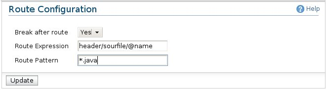

Route Mediator
The Route Mediator can be used as a child in the Router mediator in defining different routes.

Route Mediator
Here are the options available in the Route mediator configurations.
-
Break After Route: (Yes/No) Specify whether to continue with the sibling routes or stop from
the current route, if the routing condition is successful.
-
Route Expression: An xpath expression to execute on the message
-
Route Pattern: A regular expression to compare with the value retrieved from the above xpath expression.